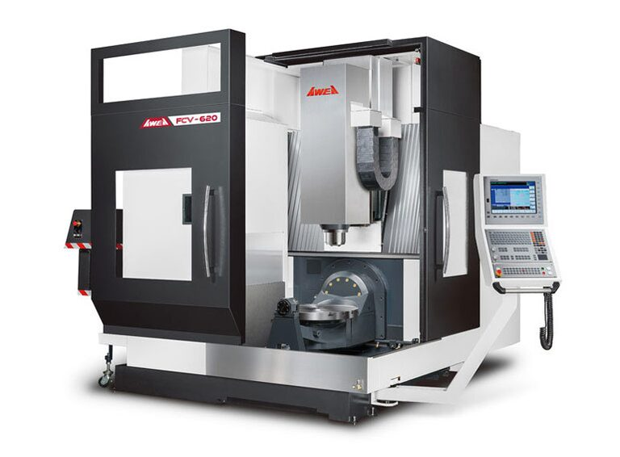
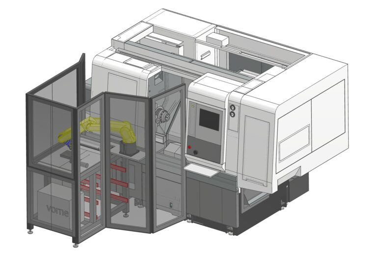
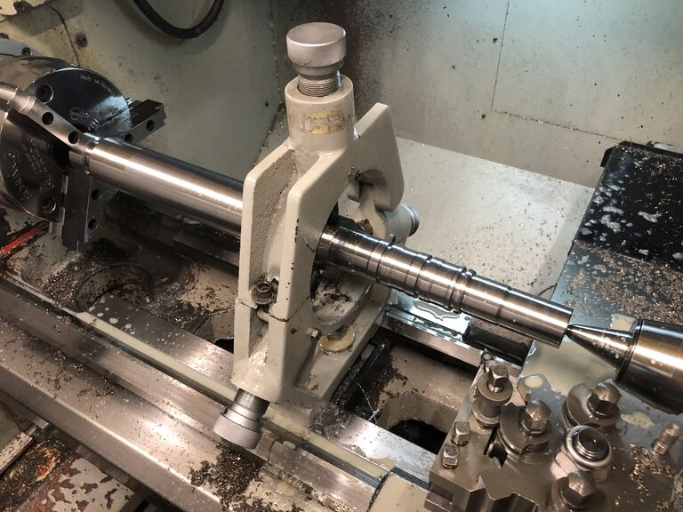
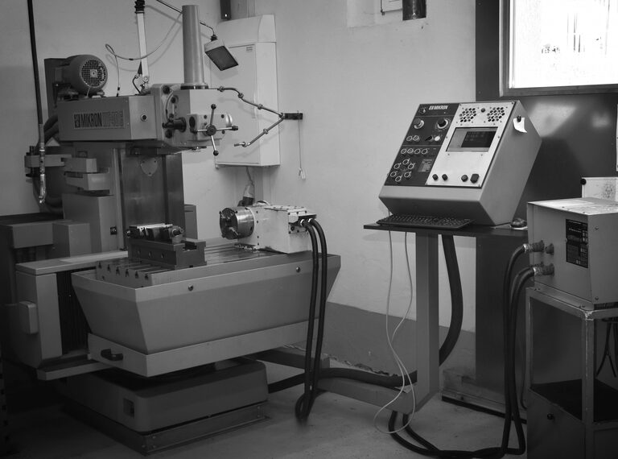
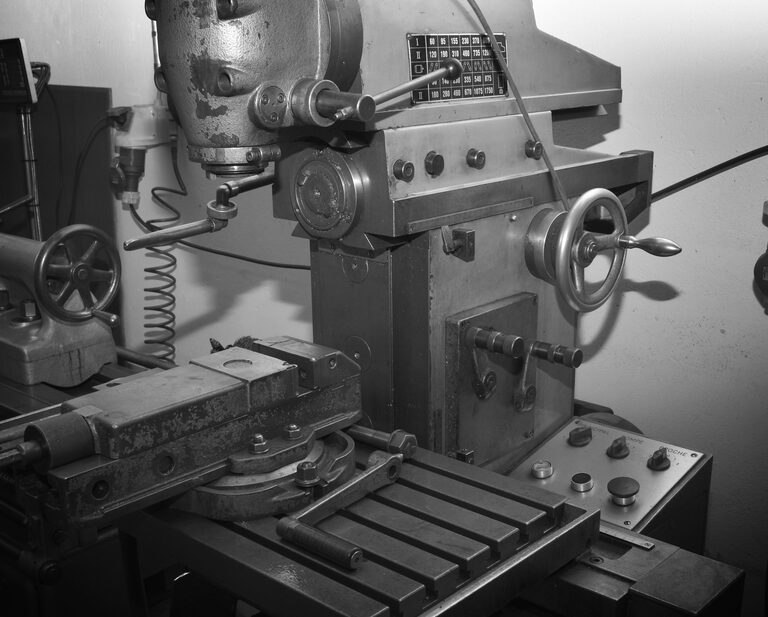
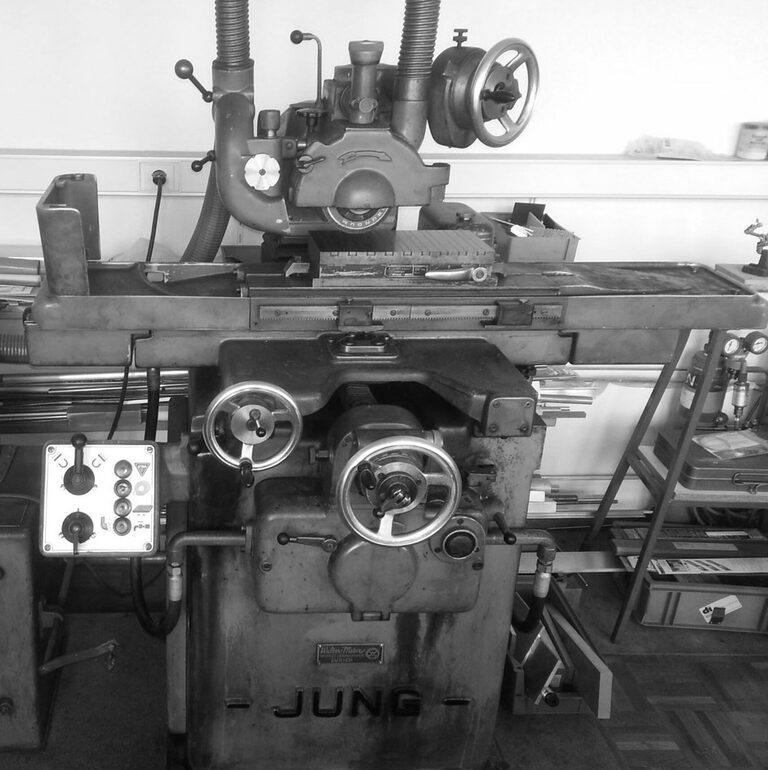
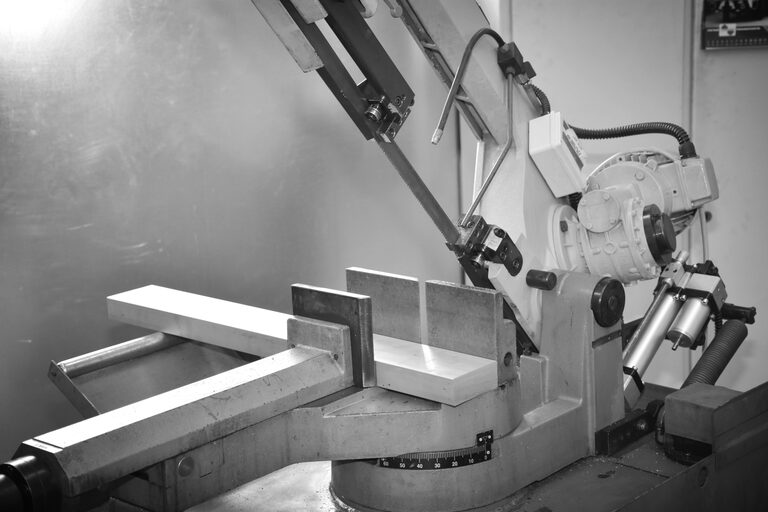
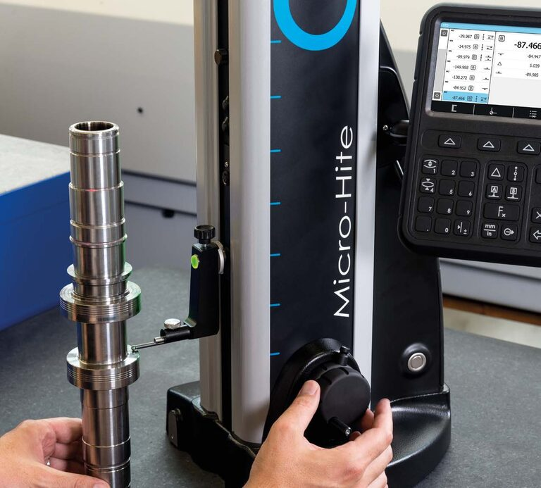

Parc de machines
Notre parc de machines
Fraisage et tournage CNC avec automatisation robotisée, usinage conventionnel, rectification, sciage et métrologie sous un même toit.
-

01 / Fraisage CNC 5 axes avec automatisation robotiséeAwea FCV-620
- Courses maximales (X × Y × Z)
- 635 x 535 x 460 mm
- Surface de serrage
- Ø 500 / 650 mm
- Changeur d'outils
- 60 outils
- Broche
- 15'000 rpm
- Commande
- Heidenhain iTNC530 avec règles de verre
-
 02 / Fraisage CNC 3 axes avec automatisation robotisée
02 / Fraisage CNC 3 axes avec automatisation robotiséeEmco E350
- Courses maximales (X × Y × Z)
- 350 x 250 x 300 mm
- Surface de serrage
- Ø 520 / 300 mm
- Changeur d'outils
- 20 outils
- Broche
- 10'000 rpm
- Commande
- Siemens
-

03 / Tournage CNC avec automatisation robotiséeNakamura-Tome AS200LMYS
- Diamètre de tournage
- max. 340 mm
- Passage de barre
- 65 mm
- Distance entre pointes
- 800 mm
- Longueur de tournage
- max. 570 mm
- Postes d'outils
- 12 / 24
- Commande
- Fanuc Oi-TF
- Particularités
- Axe Y, contre-broche et outils motorisés (fonction fraisage)
-

04 / Tournage CNCXYZ Proturn 350
- Diamètre de tournage au-dessus du chariot
- 190 mm
- Diamètre de tournage au-dessus du banc
- 350 mm
- Passage de barre
- 53 mm
- Distance entre pointes
- 1000 mm
-

05 / Fraisage CNC 3 axesMikron WF40C Retrofit
- Courses maximales (X × Y × Z)
- 585 x 585 x 480 mm
- Surface de serrage
- 550 x 900 mm
- Particularités
- 4e axe
-

06 / Fraisage conventionnelFraisage conventionnel
- Courses maximales (X × Y × Z)
- 250 x 400 x 400 mm
- Surface de serrage
- 300 x 600 mm
-

07 / Rectification plane conventionnelleRectification plane conventionnelle
- Surface de travail avec plateau magnétique
- 300 x 150 mm
- Courses maximales (X × Y × Z)
- X = 400 mm, Y = 160 mm
- Distance maximale entre la table et la broche de rectification
- 400 mm
- Poids maximal de la pièce
- 45 kg
-

08 / SciageSciage
- Rond
- 270 mm
- Carré
- 270 x 270 mm
- Rectangulaire
- 300 x 250 mm
-

09 / Poste de mesure avec colonne de mesure2D
- Plage de mesure
- 770 mm
- Erreur maximale tolérée
- 2 + 2L/1000 µm
- Répétabilité
- ≤ 1 µm

CAO, FAO et FEM
CAD
Autodesk Inventor
FEM
Autodesk Inventor Nastran
CAM
Autodesk Inventor HSM